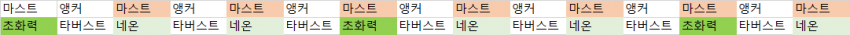
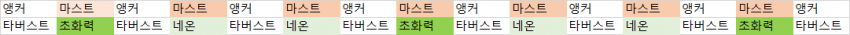

색칠한 마스트는 3스택
일반적으로 레이드 3분간 14~15버스트라는걸 생각해보면 초화력+3스택은 2번 가능함

여기서 네온 초화력 딜을 더 뽑고싶으면 앵커 타버스트 선버로 첫 초화력에 마스트 2스택을 쓰는 방법이 있음
실제로 뭐가 더 셀지는 실전 가서 쳐봐야 알것같긴 함
원본: https://gall.dcinside.com/mgallery/board/view/?id=gov&no=5279067
백업 시각:

색칠한 마스트는 3스택
일반적으로 레이드 3분간 14~15버스트라는걸 생각해보면 초화력+3스택은 2번 가능함

여기서 네온 초화력 딜을 더 뽑고싶으면 앵커 타버스트 선버로 첫 초화력에 마스트 2스택을 쓰는 방법이 있음
실제로 뭐가 더 셀지는 실전 가서 쳐봐야 알것같긴 함